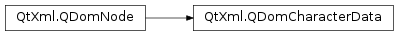

QDomCharacterData¶
Inherited by: QDomText, QDomComment, QDomCDATASection
Synopsis¶
Functions¶
- def
appendData(arg) - def
data() - def
deleteData(offset, count) - def
insertData(offset, arg) - def
length() - def
replaceData(offset, count, arg) - def
setData(arg__1) - def
substringData(offset, count)
Detailed Description¶
The
PySide2.QtXml.QDomCharacterDataclass represents a generic string in the DOM.Character data as used in XML specifies a generic data string. More specialized versions of this class are
PySide2.QtXml.QDomText,PySide2.QtXml.QDomCommentandPySide2.QtXml.QDomCDATASection.The data string is set with
PySide2.QtXml.QDomCharacterData.setData()and retrieved withPySide2.QtXml.QDomCharacterData.data(). You can retrieve a portion of the data string usingPySide2.QtXml.QDomCharacterData.substringData(). Extra data can be appended withPySide2.QtXml.QDomCharacterData.appendData(), or inserted withPySide2.QtXml.QDomCharacterData.insertData(). Portions of the data string can be deleted withPySide2.QtXml.QDomCharacterData.deleteData()or replaced withPySide2.QtXml.QDomCharacterData.replaceData(). The length of the data string is returned byPySide2.QtXml.QDomCharacterData.length().The node type of the node containing this character data is returned by
PySide2.QtXml.QDomCharacterData.nodeType().
-
class
PySide2.QtXml.QDomCharacterData¶ -
class
PySide2.QtXml.QDomCharacterData(x) Parameters: x – PySide2.QtXml.QDomCharacterDataConstructs an empty character data object.
Constructs a copy of
x.The data of the copy is shared (shallow copy): modifying one node will also change the other. If you want to make a deep copy, use
PySide2.QtXml.QDomNode.cloneNode().
-
PySide2.QtXml.QDomCharacterData.appendData(arg)¶ Parameters: arg – unicode Appends the string
argto the stored string.
-
PySide2.QtXml.QDomCharacterData.data()¶ Return type: unicode Returns the string stored in this object.
If the node is a
null node, it will return an empty string.
-
PySide2.QtXml.QDomCharacterData.deleteData(offset, count)¶ Parameters: - offset – long
- count – long
Deletes a substring of length
countfrom positionoffset.
-
PySide2.QtXml.QDomCharacterData.insertData(offset, arg)¶ Parameters: - offset – long
- arg – unicode
Inserts the string
arginto the stored string at positionoffset.
-
PySide2.QtXml.QDomCharacterData.length()¶ Return type: PySide2.QtCore.intReturns the length of the stored string.
-
PySide2.QtXml.QDomCharacterData.replaceData(offset, count, arg)¶ Parameters: - offset – long
- count – long
- arg – unicode
Replaces the substring of length
countstarting at positionoffsetwith the stringarg.
-
PySide2.QtXml.QDomCharacterData.setData(arg__1)¶ Parameters: arg__1 – unicode Sets this object’s string to
v.
-
PySide2.QtXml.QDomCharacterData.substringData(offset, count)¶ Parameters: - offset – long
- count – long
Return type: unicode
Returns the substring of length
countfrom positionoffset.
© 2018 The Qt Company Ltd. Documentation contributions included herein are the copyrights of their respective owners. The documentation provided herein is licensed under the terms of the GNU Free Documentation License version 1.3 as published by the Free Software Foundation. Qt and respective logos are trademarks of The Qt Company Ltd. in Finland and/or other countries worldwide. All other trademarks are property of their respective owners.